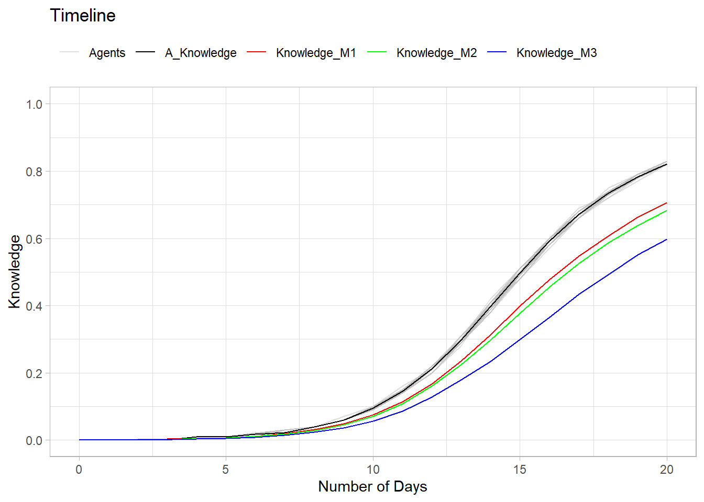
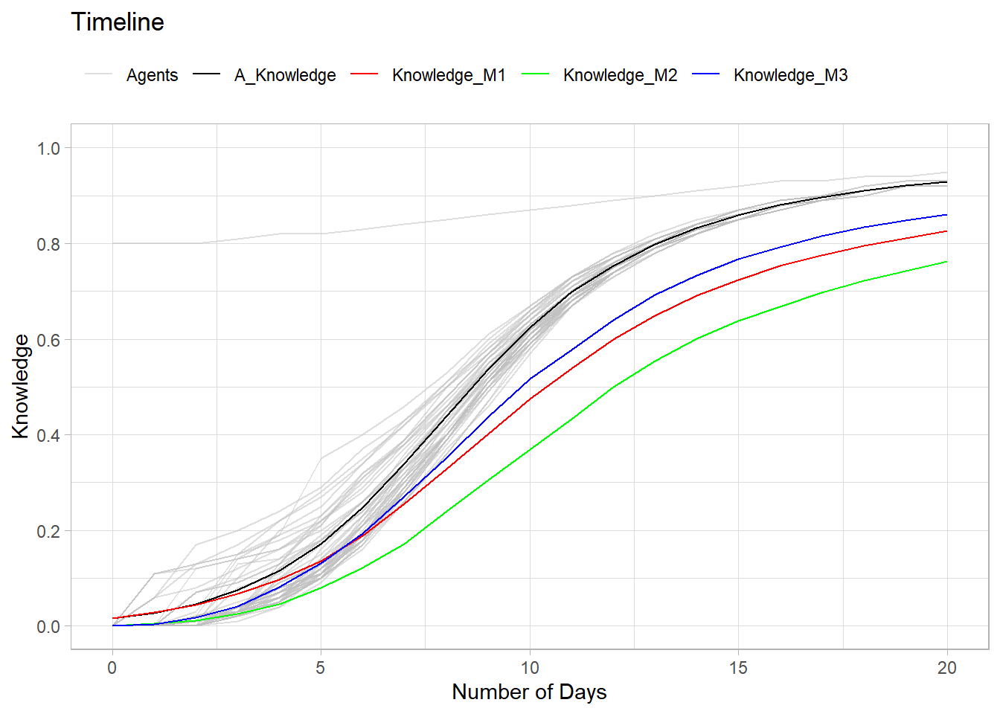
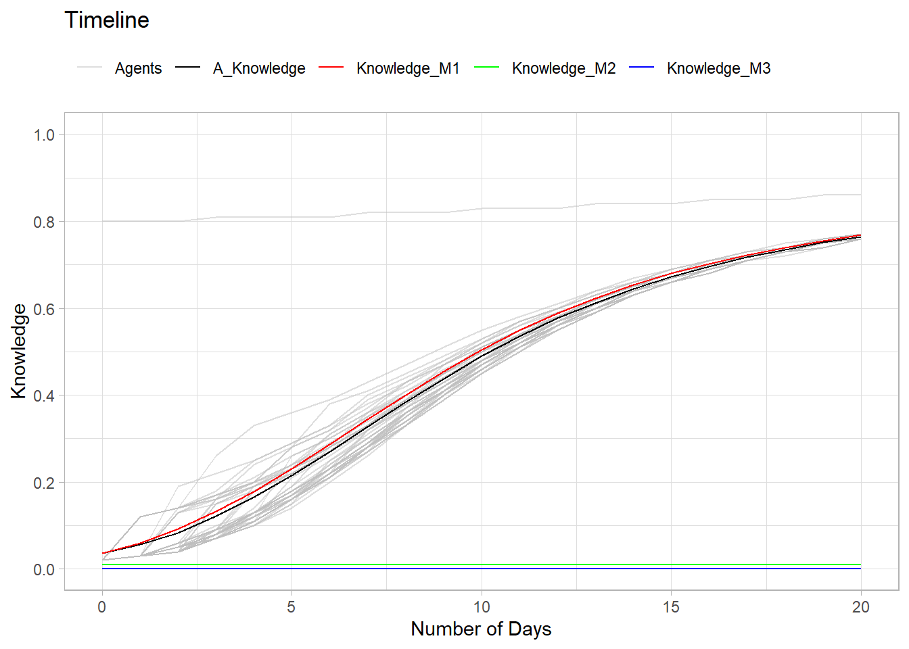
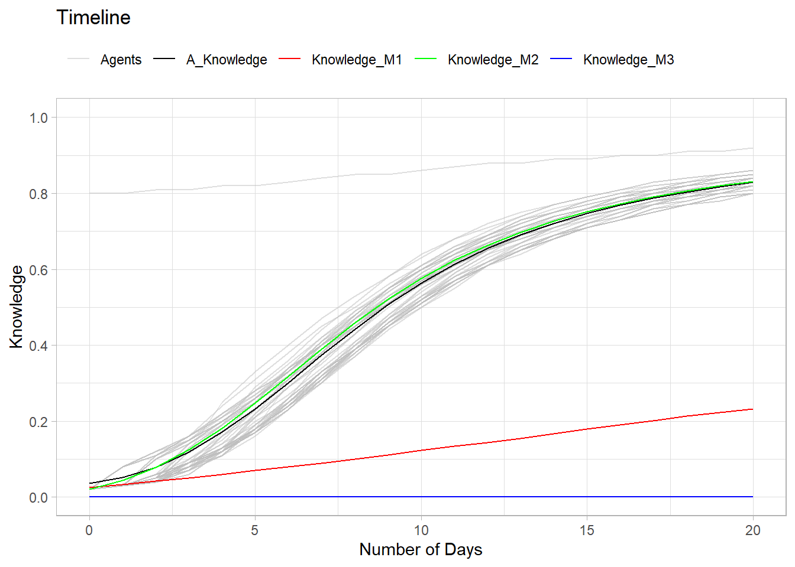
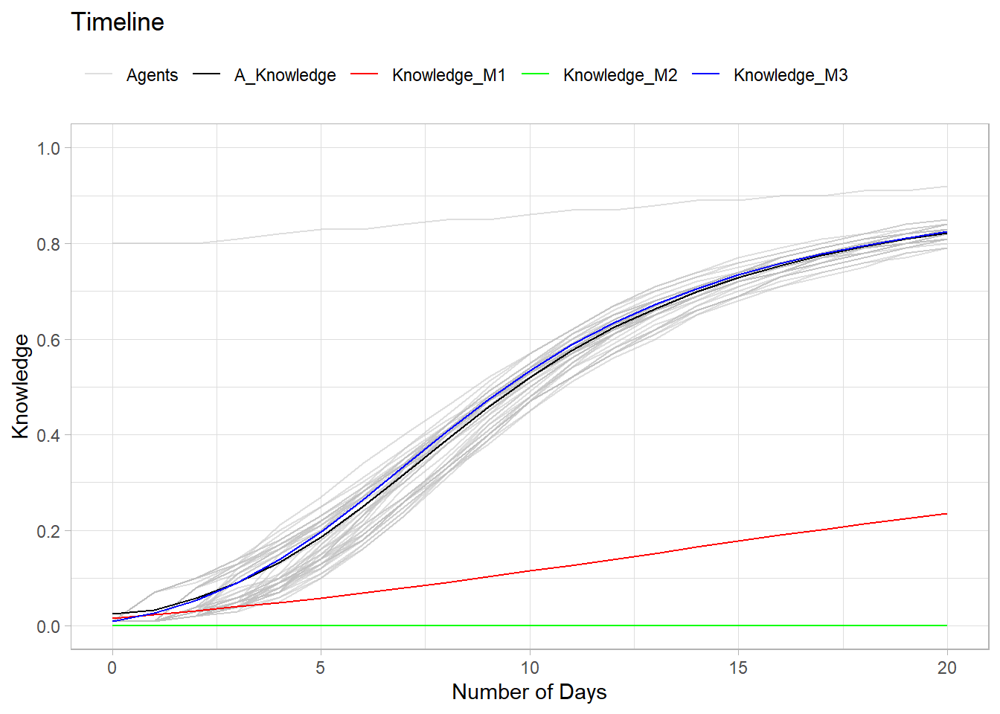

The basic idea is that when two agents meet, they learn together. Later, this should happen in a network. In the beginning, I will let the agents meet randomly in the population to see if the implementation of joint learning works.
If it works as it should, it will be expanded so that a certain percentage of the population meets at the same time.
Now it seems to be time to add other aspects. At first it seems central that different areas of knowledge should be possible.
Definitions
Loading some Packages for easier Data management and Presentation of Results
gen_Pop<-function(nA=NumberOfAgents,K=Knowledge,Typ=SpezKnowledge,pWD=percentsWorkingaDay,pMD=percentsMeetingsaDay){ID<-seq_len(nA)Pop<-tibble( ID =ID, "A_Topic"="")Pop<-update_Pop(Pop =Pop, name ="A_Knowledge", add =0, set =TRUE)Pop<-update_Pop(Pop =Pop, name ="A_Profile", add =0, set =TRUE)Pop<-update_Pop(Pop =Pop, name ="A_LearnRate", add =0, set =TRUE)Pop<-update_Pop(Pop =Pop, name ="A_pWorkDay", add =pWD, set =TRUE)Pop<-update_Pop(Pop =Pop, name ="A_pMeetDay", add =pMD, set =TRUE)if(length(Typ)>0){for(iinseq_along(Typ)){Pop<-update_Pop(Pop =Pop, name ="Knowledge", Typ =Typ[[i]], add =K[[i]], set =TRUE)}}Pop<-update_Knowledge(Pop =Pop)Pop<-update_Topic(Pop =Pop)return(Pop)}
Code
Pop<-gen_Pop( nA =10, K =list(0.2,0.2), Typ =list("M0", "M1"), pWD =1, pMD =0.8)Pop<-gen_Pop( nA =10, K =list(0.1, 0.2, 0.0), Typ =list("M1", "M2", "M3"), pWD =1, pMD =0.8)Pop
prep_Counter<-function(Pop=Pop,set=TRUE){Pop<-update_Pop(Pop =Pop, name ="c_time_meet", add =0, set =set)Pop<-update_Pop(Pop =Pop, name ="c_time_learn", add =0, set =set)Pop<-update_Pop(Pop =Pop, name ="c_n_meet", add =0, set =set)return(Pop)}
Code
prep_Res<-function(Pop=Pop,time_day=hoursDay,set=TRUE){Pop<-update_Pop(Pop =Pop, name ="r_time_meet", add =time_day*Pop[["A_pWorkDay"]], fac =Pop[["A_pMeetDay"]], set =set)Pop<-update_Pop(Pop =Pop, name ="r_time_learn", add =time_day*Pop[["A_pWorkDay"]], fac =1-(Pop[["A_pMeetDay"]]) , set =set)return(Pop)}
Code
Pop<-gen_Pop( nA =10, K =list(0.01, 0.2), Typ =list("M1", "M2"), pWD =0.5, pMD =0.8)Pop<-prep_Counter( Pop =Pop)Pop<-prep_Res( Pop =Pop, time_day =8)Pop
SubPop<-sel_SubPop(Pop =Pop, n =2)$selSubPop<-update_Pop(Pop =SubPop, name ="Knowledge", Typ ="M2", add =0, set =TRUE)Pop<-int_SubPop(SubPop =SubPop, Pop =Pop)Pop<-update_Knowledge(Pop =Pop)Pop<-update_Topic(Pop =Pop)Pop
Functions to select and sets learning slots from a Population
Select a random Slot of pairs
Needs
A Population (Pop) with several Agents defined by ID’s
A size of the Slot in percents of the population
Hints
because it leads to trouble will selecting otherwise the calculated n is limited at the moment between 1 and half of the Population
Code
sel_Pairs_rnd<-function(Pop=Pop,psize=percentsOfPop){sID<-"tmp_ID"psize<-min(psize, 1)nR<-nrow(Pop)n<-round(nR*psize*0.49, 0)n<-max(n, 1)SubPop<-sel_SubPop( Pop =Pop, n =n)Slot1<-SubPop$sel%>%mutate(!!sID:=seq_len(n))if(nrow(SubPop$rest)==n){Slot2<-SubPop$rest}else{SubPop<-sel_SubPop( Pop =SubPop$rest, n =n)Slot2<-SubPop$sel}Slot2<-Slot2%>%mutate(!!sID:=seq_len(n))Pairs<-bind_rows(Slot1, Slot2)return(Pairs)}
Output
A random Slot-Population with Slot ID’s which marks the pairs
A learning process with updated learn rate by current knowledge when Agents meet randomly by Days
Needs
A Population (Pop) with several Agents defined by ID’s and Knowledge
optional for future implementations a name (Typ) for the specific Knowledge
A number of Days (nD)
A percentage of Daytime which each agents stays in meetings (mean-value). has to be a scalar.
A amount of hours for the day, is set to 8
A duration for the meetings in hours, is set to 1
Code
sim_Days<-function(Pop=Pop,nD=nubmberDay,time_day=8,time_meet=0.75){Pop<-update_Knowledge(Pop =Pop)Pop<-update_Topic(Pop =Pop)Pop<-prep_Counter( Pop =Pop)Pop<-prep_Res( Pop =Pop, time_day =time_day)TL<-get_Timeline(TL =TL, Time =0, Pop =Pop)for(iin1:nD){Pop<-learn_Day(Pop =Pop, time_day =time_day, time_meet =time_meet)TL<-get_Timeline(TL =TL, Time =i, Pop =Pop)}Output<-list( Pop =Pop, TL =TL)return(Output)}
Output
A List with the new Population and a Timeline over the number of Days
Code
nA<-50# number of AgentsPop<-gen_Pop( nA =nA, K =list(0.0, 0.0, 0.0), Typ =list("M1", "M2", "M3"), pWD =0.8, pMD =0.8)Pop
Warning: `aes_string()` was deprecated in ggplot2 3.0.0.
ℹ Please use tidy evaluation idioms with `aes()`.
ℹ See also `vignette("ggplot2-in-packages")` for more information.
Scale for colour is already present.
Adding another scale for colour, which will replace the existing scale.
Scale for colour is already present.
Adding another scale for colour, which will replace the existing scale.

… Special Cases
Only one Agent with Knowledge (0.8)
Code
Pop<-gen_Pop( nA =nA, K =list(0.0, 0.0, 0.0), Typ =list("M1", "M2", "M3"), pWD =0.8, pMD =0.8)Pop[Pop$ID==1, "Knowledge_M1"]<-0.8#Pop[Pop$ID == 2, "Knowledge_M2"] <- 0.8#Pop[Pop$ID == 3, "Knowledge_M3"] <- 0.8Pop<-update_Knowledge(Pop =Pop)Pop<-update_Topic(Pop =Pop)Pop
Scale for colour is already present.
Adding another scale for colour, which will replace the existing scale.
Scale for colour is already present.
Adding another scale for colour, which will replace the existing scale.

Code
Pop<-gen_Pop( nA =nA, K =list(0.02, 0.01, 0.0), Typ =list("M1", "M2", "M3"), pWD =0.8, pMD =0.8)Pop[Pop$ID==1, "Knowledge_M1"]<-0.8#Pop[Pop$ID == 2, "Knowledge_M2"] <- 0.8#Pop[Pop$ID == 3, "Knowledge_M3"] <- 0.8Pop<-update_Knowledge(Pop =Pop)Pop<-update_Topic(Pop =Pop)Pop
Scale for colour is already present.
Adding another scale for colour, which will replace the existing scale.
Scale for colour is already present.
Adding another scale for colour, which will replace the existing scale.

Code
Pop<-gen_Pop( nA =nA, K =list(0.01, 0.02, 0.0), Typ =list("M1", "M2", "M3"), pWD =0.8, pMD =0.8)Pop[Pop$ID==1, "Knowledge_M1"]<-0.8#Pop[Pop$ID == 2, "Knowledge_M2"] <- 0.8#Pop[Pop$ID == 3, "Knowledge_M3"] <- 0.8Pop<-update_Knowledge(Pop =Pop)Pop<-update_Topic(Pop =Pop)Pop
Scale for colour is already present.
Adding another scale for colour, which will replace the existing scale.
Scale for colour is already present.
Adding another scale for colour, which will replace the existing scale.

Code
Pop<-gen_Pop( nA =nA, K =list(0.0, 0.0, 0.01), Typ =list("M1", "M2", "M3"), pWD =0.8, pMD =0.8)Pop[Pop$ID==1, "Knowledge_M1"]<-0.8#Pop[Pop$ID == 2, "Knowledge_M2"] <- 0.8#Pop[Pop$ID == 3, "Knowledge_M3"] <- 0.8Pop<-update_Knowledge(Pop =Pop)Pop<-update_Topic(Pop =Pop)Pop
Scale for colour is already present.
Adding another scale for colour, which will replace the existing scale.
Scale for colour is already present.
Adding another scale for colour, which will replace the existing scale.

Code
Pop<-gen_Pop( nA =nA, K =list(0.0, 0.0, 0.01), Typ =list("M1", "M2", "M3"), pWD =0.8, pMD =0.8)#Pop[Pop$ID == 1, "Knowledge_M1"] <- 0.8Pop[Pop$ID==2, "Knowledge_M2"]<-0.8#Pop[Pop$ID == 3, "Knowledge_M3"] <- 0.8Pop<-update_Knowledge(Pop =Pop)Pop<-update_Topic(Pop =Pop)Pop
Scale for colour is already present.
Adding another scale for colour, which will replace the existing scale.
Scale for colour is already present.
Adding another scale for colour, which will replace the existing scale.
---title: "Areas of Knowledge"author: "Hubert Baechli"execute: cache: false---# Simulating random meetings (Areas of Knowledge)The basic idea is that when two agents meet, they learn together. Later, this should happen in a network. In the beginning, I will let the agents meet randomly in the population to see if the implementation of joint learning works.If it works as it should, it will be expanded so that a certain percentage of the population meets at the same time.Now it seems to be time to add other aspects. At first it seems central that different areas of knowledge should be possible.# DefinitionsLoading some Packages for easier Data management and Presentation of Results```{r}library(tidyverse) # set.seed(1)```# Population```{r}nA =10# number of Agents``````{r}update_Pop <-function(Pop = Pop,name = Parametername,Typ ="",add =0,fac =1,set =FALSE) {if (Typ !="") { name <-paste(name, Typ, sep ="_") }if (set ==FALSE) {if (name %in%colnames(Pop)) { Pop <- Pop %>%mutate( !!name := ( .data[[name]] + add ) * fac ) } } else { Pop <- Pop %>%mutate( !!name := add * fac ) }return(Pop)}``````{r}longer_Pop <-function(Pop = Pop){ Pop_long <- Pop %>%pivot_longer(cols =starts_with("Knowledge_"),names_to ="Typ",names_prefix ="Knowledge_", values_to ="Knowledge" )return(Pop_long)}``````{r}wider_Pop <-function(Pop_long = Pop_long){ Pop <- Pop_long %>%select(-starts_with("tmp_")) %>%pivot_wider(names_from = Typ,values_from = Knowledge,names_prefix ="Knowledge_" ) %>%select(starts_with("ID"),starts_with("A_"),starts_with("Knowledge_"),starts_with("r_"),starts_with("c_"),everything())return(Pop)}``````{r}update_Knowledge <-function(Pop = Pop){ Pop_long <-longer_Pop(Pop = Pop) Pop_long <- Pop_long %>%group_by(ID) %>%mutate(tmp_Rank =rank(Knowledge, ties.method ="random"),tmp_Rank =max(tmp_Rank) - tmp_Rank +1,tmp_Rank =0.5^ tmp_Rank,tmp_LR = Knowledge * tmp_Rank,A_Knowledge =max(Knowledge),A_LearnRate =max(sum(tmp_LR),1E-3),A_Profile =min((A_LearnRate) / (A_Knowledge *sum(tmp_Rank)), 1),A_Profile = (A_Profile -0.5) *2,A_Knowledge =round(A_Knowledge, digits =2)) %>%ungroup() Pop <-wider_Pop(Pop_long = Pop_long)return(Pop)}``````{r}update_Topic <-function(Pop = Pop){ Pop_long <-longer_Pop(Pop = Pop) Pop_long <- Pop_long %>%group_by(ID) %>%mutate(tmp_Rank =rank(Knowledge, ties.method ="random"),tmp_Rank =max(tmp_Rank) - tmp_Rank +1,tmp_Rank =0.5^ tmp_Rank,A_Topic = Typ[which.max(tmp_Rank)]) %>%ungroup() Pop <-wider_Pop(Pop_long = Pop_long)return(Pop)}``````{r}gen_Pop <-function(nA = NumberOfAgents,K = Knowledge,Typ = SpezKnowledge,pWD = percentsWorkingaDay,pMD = percentsMeetingsaDay){ ID <-seq_len(nA) Pop <-tibble( ID = ID, "A_Topic"="") Pop <-update_Pop(Pop = Pop, name ="A_Knowledge", add =0, set =TRUE) Pop <-update_Pop(Pop = Pop, name ="A_Profile", add =0, set =TRUE) Pop <-update_Pop(Pop = Pop, name ="A_LearnRate", add =0, set =TRUE) Pop <-update_Pop(Pop = Pop, name ="A_pWorkDay", add = pWD, set =TRUE) Pop <-update_Pop(Pop = Pop, name ="A_pMeetDay", add = pMD, set =TRUE)if (length(Typ) >0) {for (i inseq_along(Typ)) { Pop <-update_Pop(Pop = Pop, name ="Knowledge", Typ = Typ[[i]], add = K[[i]],set =TRUE) } } Pop <-update_Knowledge(Pop = Pop) Pop <-update_Topic(Pop = Pop)return(Pop) }``````{r}Pop <-gen_Pop( nA =10, K =list(0.2,0.2), Typ =list("M0", "M1"), pWD =1, pMD =0.8)Pop <-gen_Pop( nA =10, K =list(0.1, 0.2, 0.0), Typ =list("M1", "M2", "M3"), pWD =1,pMD =0.8)Pop``````{r}prep_Counter <-function(Pop = Pop,set =TRUE){ Pop <-update_Pop(Pop = Pop, name ="c_time_meet", add =0, set = set) Pop <-update_Pop(Pop = Pop, name ="c_time_learn", add =0, set = set) Pop <-update_Pop(Pop = Pop, name ="c_n_meet", add =0, set = set)return(Pop) }``````{r}prep_Res <-function(Pop = Pop,time_day = hoursDay,set =TRUE){ Pop <-update_Pop(Pop = Pop, name ="r_time_meet", add = time_day * Pop[["A_pWorkDay"]], fac = Pop[["A_pMeetDay"]],set = set) Pop <-update_Pop(Pop = Pop, name ="r_time_learn", add = time_day * Pop[["A_pWorkDay"]], fac =1- (Pop[["A_pMeetDay"]]) ,set = set)return(Pop) }``````{r}Pop <-gen_Pop( nA =10, K =list(0.01, 0.2), Typ =list("M1", "M2"), pWD =0.5,pMD =0.8)Pop <-prep_Counter( Pop = Pop)Pop <-prep_Res( Pop = Pop, time_day =8)Pop```# Data ManagementFunctions to select and reintegrate a Sub Populations### Select a Sub Population#### Needs1. A Population (Pop) with several Agents defined by ID's2. A vector wit ID's(IDs). If no vector is defined it needs a (n, witch is initialised by 2) for selecting random ID's3. A value (n) if the selection should be random#### Hints- If StudyTime isn't given the Population will be initialising with 0```{r}sel_SubPop <-function(Pop = Pop,IDs =NULL,n =2) {if (is.null(IDs)) { IDs <-sample( Pop[["ID"]], size=n ) } SubPop <-list() SubPop$sel <- Pop %>%filter(ID %in% IDs) %>%arrange(match(ID, IDs)) SubPop$rest <- Pop %>%filter(!ID %in% IDs)return(SubPop)}```#### Output1. List with Sub Population (\$sel) and the rest of the Population(\$rest)```{r}SubPop <-sel_SubPop( Pop = Pop )SubPop$selSubPop$rest``````{r}SubPop <-sel_SubPop( Pop = Pop , IDs =c(2, 1))SubPop$selSubPop$rest```### Integrate Sub Population#### Needs1. A Sub Population (SubPop) with Agents defined by ID's which are also defined in Population2. A Population (Pop) with several Agents defined by ID's#### Hints- SubPop and Pop has to have the same cols```{r}int_SubPop <-function(SubPop = SubPop,Pop = Pop) { col_sort <-colnames(Pop) SubPop <- SubPop[, col_sort] IDs <- SubPop[["ID"]] Pop[Pop$ID %in% IDs,] <- SubPop Pop <- Pop %>%arrange(ID)return(Pop)}```#### Output1. Population with the defined StudyTime```{r}PopSubPop <-sel_SubPop(Pop = Pop, n =2 )$selSubPop <-update_Pop(Pop = SubPop,name ="Knowledge",Typ ="M2",add =0,set =TRUE)Pop <-int_SubPop(SubPop = SubPop, Pop = Pop)Pop <-update_Knowledge(Pop = Pop)Pop <-update_Topic(Pop = Pop)Pop```## Timelinessaving Timelines during Simulations### Get Agents-Timelines#### Needs1. A container name for the Timeline2. A value for the Time3. A Population (Pop) with several Agents defined by ID's4. A colname from the Population which should followed ver Time5. optional parameter Sum. Ich Sum = 1 a mean and median is calculated for each Time```{r}get_Timeline <-function(TL = Timeline,Time =0,Pop = Pop) { TLadd <- Pop %>%mutate(Time = Time) %>%select(starts_with("ID"),starts_with("Time"),starts_with("A_Knowledge"),starts_with("Knowledge_"))if (Time ==0) { TL <- TLadd } else { TL <-bind_rows(TL, TLadd) }return(TL) }```#### Output1. A Timeline in a long format```{r}Timeline <-get_Timeline(TL = Timeline,Time =0,Pop = Pop)Timeline <-get_Timeline(TL = Timeline,Time =1,Pop = Pop)Timeline```# **Learning**Learning with a exponential lern rate#### Needs1. A Population (Pop) with several Agents defined by ID's and Knowledge2. optional for future implementations a name (Typ) for the specific Knowledge3. A value for the learn rate (LR). could be a scalar or e vector with the same length as the Population4. A value for the study time (ST). could be a scalar or e vector with the same length as the Population#### Hints- If learn rate isn't given the values from the Population will be used, if this is missing in the Population 0 is used.```{r}learn <-function(Pop = Pop,con =TRUE) {if (con ==TRUE){ Pop <- Pop %>%mutate(r_time_learn = r_time_learn + r_time_meet,r_time_meet =0) Pop <-update_Knowledge(Pop = Pop) Pop <-update_Topic(Pop = Pop) } Pop_long <-longer_Pop(Pop = Pop) Pop_long <- Pop_long %>%group_by(ID) %>%mutate(r_time_learn =ifelse(Typ == A_Topic, r_time_learn, 0)) %>%mutate(tmp_LearnRate = A_LearnRate,tmp_Time0 = ( 1- Knowledge )^( 1/-tmp_LearnRate ),Knowledge =1- ( tmp_Time0 + r_time_learn )^( -tmp_LearnRate )) %>%mutate(c_time_learn = c_time_learn +sum(r_time_learn),r_time_learn =0) %>%ungroup() Pop <-wider_Pop(Pop_long = Pop_long)return(Pop)}```#### Output1. Population with updated Knowledge```{r}Pop <-gen_Pop( nA =5, K =list(c(0.8, 0.3, 0, 0 ,0), c(0.0, 0.4, 0.7, 0 ,0), c(0.0, 0.4, 0.7, 0 ,0)), Typ =list("M1", "M2", "M3"), pWD =1.0,pMD =0.8)Pop <-prep_Counter( Pop = Pop)Pop <-prep_Res( Pop = Pop, time_day =8)Pop <-learn(Pop = Pop, con =FALSE)Pop <-update_Knowledge(Pop = Pop)Pop <-update_Topic(Pop = Pop)Pop```## SlotsFunctions to select and sets learning slots from a Population### Select a random Slot of pairs#### Needs1. A Population (Pop) with several Agents defined by ID's2. A size of the Slot in percents of the population#### Hints- because it leads to trouble will selecting otherwise the calculated n is limited at the moment between 1 and half of the Population```{r}sel_Pairs_rnd <-function(Pop = Pop,psize = percentsOfPop) { sID <-"tmp_ID" psize <-min(psize, 1) nR <-nrow(Pop) n <-round(nR * psize *0.49, 0) n <-max(n, 1) SubPop <-sel_SubPop( Pop = Pop, n = n) Slot1 <- SubPop$sel %>%mutate(!!sID :=seq_len(n))if (nrow(SubPop$rest) == n) { Slot2 <- SubPop$rest } else { SubPop <-sel_SubPop( Pop = SubPop$rest, n = n) Slot2 <- SubPop$sel } Slot2 <- Slot2 %>%mutate(!!sID :=seq_len(n)) Pairs <-bind_rows(Slot1, Slot2)return(Pairs) } ```#### Output1. A random Slot-Population with Slot ID's which marks the pairs```{r}PopPairs <-sel_Pairs_rnd(Pop = Pop, psize =0.5)PairsPairs <-sel_Pairs_rnd(Pop = Pairs, psize =1)Pairs```### **Learning by Pairs**Learning with a exponential learn rate defined by pairs#### Needs1. A Slot-Population with several paired Agents defined by Slot-ID's. Prepaerd by the function set_SlotPar()2. optional for future implementations a name (Typ) for the specific Knowledge```{r}learn_Pairs <-function(Pairs = Pairs,time_meet = time_meet) { Pop_long <-longer_Pop(Pop = Pairs) Pop_long <- Pop_long %>%group_by(tmp_ID) %>%mutate(tmp_LearnRate =mean(A_LearnRate),tmp_facT =ifelse(Typ == A_Topic, 1, 0)) %>%group_by(tmp_ID, Typ) %>%mutate(tmp_facT =mean(tmp_facT )) %>%group_by(ID) %>%mutate(tmp_time_learn = tmp_facT * time_meet,tmp_Time0 = ( 1- Knowledge )^( 1/-tmp_LearnRate ),Knowledge =1- ( tmp_Time0 + tmp_time_learn)^( -tmp_LearnRate )) %>%ungroup() Pairs <-wider_Pop(Pop_long = Pop_long) Pairs <- Pairs %>%mutate(c_n_meet = c_n_meet +1,c_time_meet = c_time_meet + time_meet,r_time_meet = r_time_meet - time_meet) return(Pairs)}```#### Output1. Slot-Population with updated Knowledge```{r}PairsPairs <-learn_Pairs(Pairs = Pairs, time_meet =0.75)PairsPop <-int_SubPop(SubPop = Pairs, Pop = Pop)Pop <-update_Knowledge(Pop = Pop)Pop <-update_Topic(Pop = Pop)Pop```## L**earning by** DaysLearning by Days with a exponential learn rate defined by pairs according learning by Slots#### Needs1. A Population (Pop) with several Agents defined by ID's and Knowledge2. optional for future implementations a name (Typ) for the specific Knowledge3. A percentage of Daytime which each agents stays in meetings (mean-value). has to be a scalar.4. A amount of hours for the day, is set to 85. A duration for the meetings in hours, is set to 1#### Hints- The learn rate is fixed during the Day and updated at the end of the Day```{r}learn_Day <-function(Pop = Pop,time_day = time_day,time_meet = time_meet) { Pop <-update_Knowledge(Pop = Pop)Pop <-update_Topic(Pop = Pop)if (!any(startsWith(names(Pop), "c_"))) { Pop <-prep_Counter( Pop = Pop) Pop <-prep_Res( Pop = Pop, time_day = time_day, set =TRUE)}Pop <-prep_Res( Pop = Pop, time_day = time_day)nR_Pop <-nrow(Pop)psize <-mean(Pop[["A_pMeetDay"]])iD <-round(time_day / time_meet, digits =0)for(i in1:iD) { ParBreak <- Pop %>%select(r_time_meet) %>%mutate(r_time_meet =ifelse(r_time_meet >= time_meet, 1, 0))if (sum(ParBreak$r_time_meet) <2) { break } Pop_Res <- Pop[Pop$r_time_meet >= time_meet, ] nR_Pop_Res <-nrow(Pop_Res) psize_i <- psize / nR_Pop_Res * nR_Pop Pairs <-sel_Pairs_rnd(Pop = Pop_Res, psize = psize_i) Pairs <-learn_Pairs(Pairs = Pairs, time_meet = time_meet) Pop <-int_SubPop(SubPop = Pairs, Pop = Pop)} Pop <-learn(Pop = Pop, con =TRUE)return(Pop) }```#### Output1. Population with updated Knowledge, learn rate and study time```{r}Pop <-gen_Pop( nA =5, K =list(c(0.8, 0.3, 0, 0 ,0), c(0.0, 0.4, 0.7, 0 ,0), c(0.0, 0.4, 0.7, 0 ,0)), Typ =list("M1", "M2", "M3"), pWD =0.8,pMD =0.5)PopPop <-learn_Day(Pop = Pop, time_day =8, time_meet =0.75)Pop```## **Plots**### Plot Timeline#### Needs1. A Timeline from get_Timeline```{r}plt_Timeline <-function(TL) { Knowledges <-names(TL)[startsWith(names(TL), "Knowledge_")] TL <- TL %>%group_by(Time) %>%mutate(mean_A_Knowledge =mean(A_Knowledge, na.rm =TRUE)) %>%mutate(across(all_of(Knowledges),~mean(.x, na.rm =TRUE),.names ="mean_{.col}")) %>%ungroup() p <-ggplot(data = TL, aes(x = Time)) +geom_line(aes(y = A_Knowledge, group = ID, color ="Agents"),alpha =0.5, linetype ="solid") +geom_line(aes(y = mean_A_Knowledge, color ="Knowledge"), linetype ="solid") +ggtitle("Timeline") +xlab("Number of Days") +ylab("Knowledge") +scale_y_continuous(limits =c(0, 1), breaks =seq(0, 1, 0.2)) +theme_light() +theme(legend.title =element_blank(),legend.position ="top",legend.justification ="left" ) colors <-setNames(rainbow(length(Knowledges)), Knowledges)for (var in Knowledges) { mean_var <-paste0("mean_", var) p <- p +geom_line(aes_string(y = mean_var, color =shQuote(var)), linetype ="solid") p <- p +scale_color_manual(values =c("Agents"="grey", "Knowledge"="black", colors),labels =c("Agents"="Agents", "Knowledge"="A_Knowledge", Knowledges)) }return(p)}```#### Output1. ggplot2# **Simulation**A learning process with updated learn rate by current knowledge when Agents meet randomly by Days#### Needs1. A Population (Pop) with several Agents defined by ID's and Knowledge2. optional for future implementations a name (Typ) for the specific Knowledge3. A number of Days (nD)4. A percentage of Daytime which each agents stays in meetings (mean-value). has to be a scalar.5. A amount of hours for the day, is set to 86. A duration for the meetings in hours, is set to 1```{r}sim_Days <-function(Pop = Pop,nD = nubmberDay,time_day =8,time_meet =0.75) { Pop <-update_Knowledge(Pop = Pop) Pop <-update_Topic(Pop = Pop) Pop <-prep_Counter( Pop = Pop) Pop <-prep_Res( Pop = Pop, time_day = time_day) TL <-get_Timeline(TL = TL,Time =0,Pop = Pop)for(i in1:nD) { Pop <-learn_Day(Pop = Pop,time_day = time_day,time_meet = time_meet) TL <-get_Timeline(TL = TL,Time = i,Pop = Pop) } Output <-list( Pop = Pop,TL = TL)return(Output)}```#### Output1. A List with the new Population and a Timeline over the number of Days```{r}nA <-50# number of AgentsPop <-gen_Pop( nA = nA, K =list(0.0, 0.0, 0.0),Typ =list("M1", "M2", "M3"), pWD =0.8,pMD =0.8)Popres <-sim_Days(Pop = Pop,nD =20)res$Popplt_Timeline(TL = res$TL)```## ... Special Cases### Only one Agent with Knowledge (0.8)```{r}Pop <-gen_Pop( nA = nA, K =list(0.0, 0.0, 0.0),Typ =list("M1", "M2", "M3"), pWD =0.8,pMD =0.8)Pop[Pop$ID ==1, "Knowledge_M1"] <-0.8#Pop[Pop$ID == 2, "Knowledge_M2"] <- 0.8#Pop[Pop$ID == 3, "Knowledge_M3"] <- 0.8Pop <-update_Knowledge(Pop = Pop)Pop <-update_Topic(Pop = Pop)Popres <-sim_Days(Pop = Pop,nD =20)res$Popplt_Timeline(res$TL)``````{r}Pop <-gen_Pop( nA = nA, K =list(0.02, 0.01, 0.0),Typ =list("M1", "M2", "M3"), pWD =0.8,pMD =0.8)Pop[Pop$ID ==1, "Knowledge_M1"] <-0.8#Pop[Pop$ID == 2, "Knowledge_M2"] <- 0.8#Pop[Pop$ID == 3, "Knowledge_M3"] <- 0.8Pop <-update_Knowledge(Pop = Pop)Pop <-update_Topic(Pop = Pop)Popres <-sim_Days(Pop = Pop,nD =20)res$Popplt_Timeline(res$TL)``````{r}Pop <-gen_Pop( nA = nA, K =list(0.01, 0.02, 0.0),Typ =list("M1", "M2", "M3"), pWD =0.8,pMD =0.8)Pop[Pop$ID ==1, "Knowledge_M1"] <-0.8#Pop[Pop$ID == 2, "Knowledge_M2"] <- 0.8#Pop[Pop$ID == 3, "Knowledge_M3"] <- 0.8Pop <-update_Knowledge(Pop = Pop)Pop <-update_Topic(Pop = Pop)Popres <-sim_Days(Pop = Pop,nD =20)res$Popplt_Timeline(res$TL)``````{r}Pop <-gen_Pop( nA = nA, K =list(0.0, 0.0, 0.01),Typ =list("M1", "M2", "M3"), pWD =0.8,pMD =0.8)Pop[Pop$ID ==1, "Knowledge_M1"] <-0.8#Pop[Pop$ID == 2, "Knowledge_M2"] <- 0.8#Pop[Pop$ID == 3, "Knowledge_M3"] <- 0.8Pop <-update_Knowledge(Pop = Pop)Pop <-update_Topic(Pop = Pop)Popres <-sim_Days(Pop = Pop,nD =20)res$Popplt_Timeline(res$TL)``````{r}Pop <-gen_Pop( nA = nA, K =list(0.0, 0.0, 0.01),Typ =list("M1", "M2", "M3"), pWD =0.8,pMD =0.8)#Pop[Pop$ID == 1, "Knowledge_M1"] <- 0.8Pop[Pop$ID ==2, "Knowledge_M2"] <-0.8#Pop[Pop$ID == 3, "Knowledge_M3"] <- 0.8Pop <-update_Knowledge(Pop = Pop)Pop <-update_Topic(Pop = Pop)Popres <-sim_Days(Pop = Pop,nD =20)res$Popplt_Timeline(res$TL)```